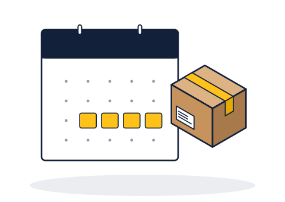
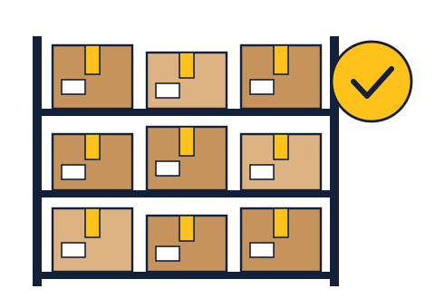
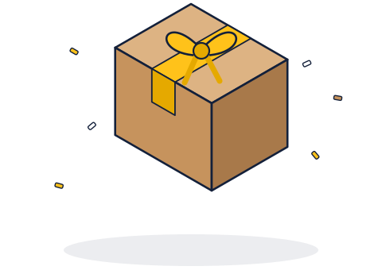

Beranda / Berita
Berita & informasi
Siaran pers, kabar kegiatan, dan pengumuman resmi dari Titip Kos.

Jadwal jemput libur semester ganjil 2026/2027 dibuka, kuota gelombang pertama 400 kardus
Pendaftaran Titip Libur dibuka 3 November sampai 15 Desember 2026. Penjemputan dibagi dua gelombang pada Januari 2027.
Baca selengkapnya
Musim libur pertama selesai, 318 kardus kembali ke pemiliknya
Selama Juli–Agustus 2026, Titip Kos menyimpan barang milik 74 mahasiswa. Dua laporan kerusakan ringan selesai diganti dalam tiga hari.

Titip Kos resmi beroperasi, mahasiswa rantau di Semarang kini bisa menitipkan barang selama libur
Mahasiswa yang pulang kampung tidak perlu lagi membayar sewa kos penuh hanya untuk menyimpan barang. Tarif mulai Rp30.000 per kardus per bulan.
Wartawan yang membutuhkan informasi tambahan bisa menghubungi Humas Titip Kos di humas@titipkos.id.